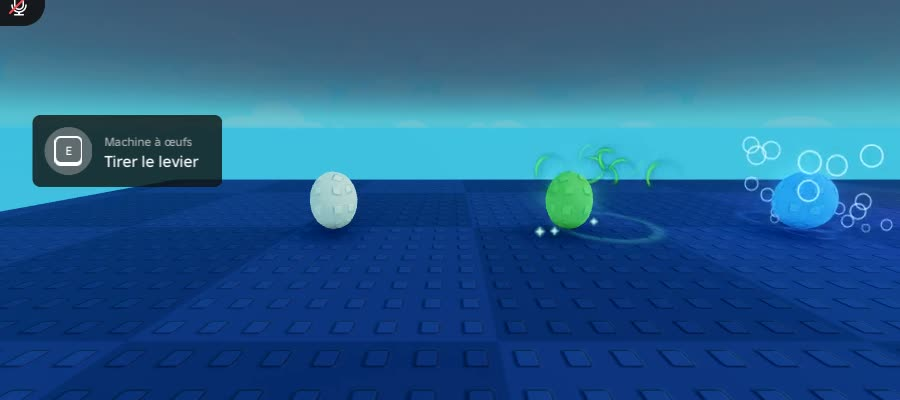
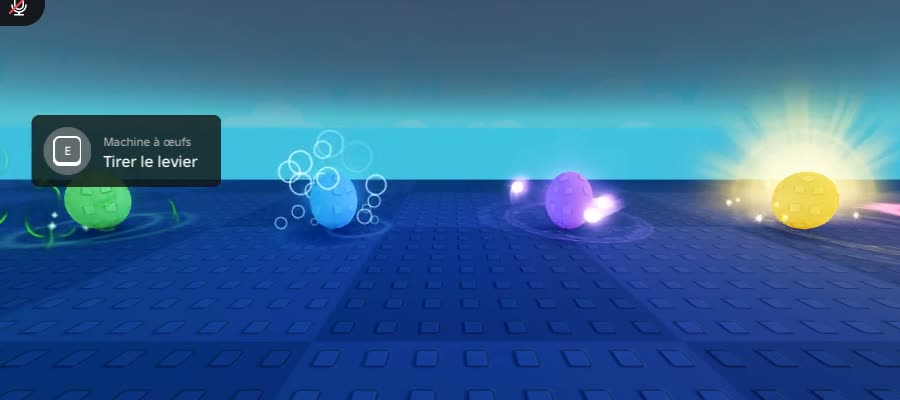
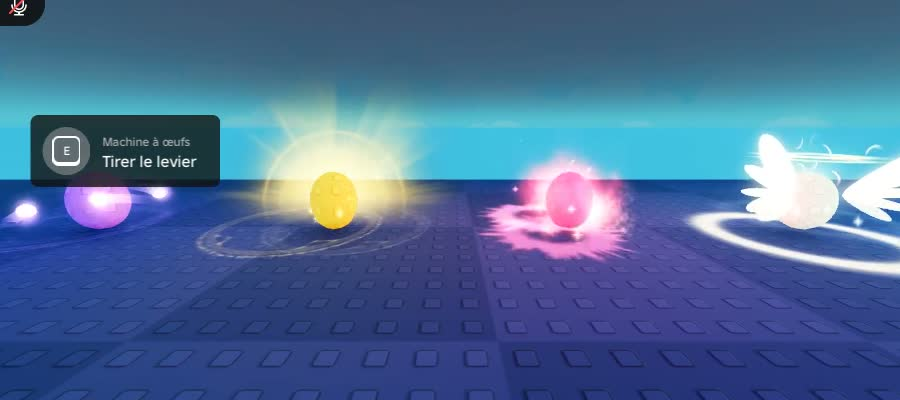
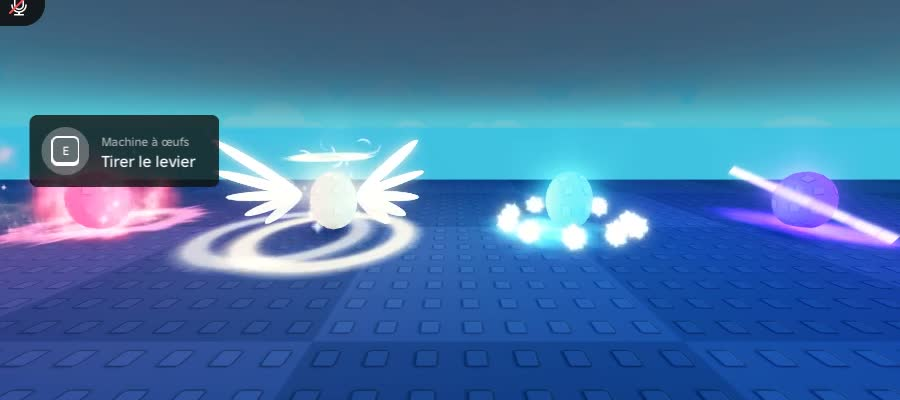
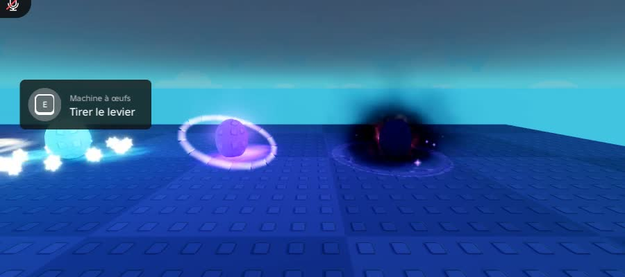

Même idée par rareté, mais chaque aura est maintenant faite de plusieurs couches : un halo doux de la couleur de la rareté derrière l'œuf, un cercle lumineux animé au sol (anneau, ondes, runes, couronne de feu, givre, galaxie…) et la signature avec de belles textures (traînées derrière les orbes, vraies flammes, rayons à deux couches, anneau d'étoiles qui défile). Filmé dans Studio sur des œufs de test, de gauche à droite : Commun → Secret. Dans la machine, l'aura se pose maintenant sous l'œuf de son socle.




